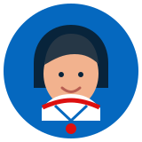

ACESSO
Defina sua meta: entrar no mercado, mudar de função ou atualizar sua qualificação.
Entrar no offshore não é um único curso. É entender sua área, os requisitos de segurança e qualificação e montar uma trajetória coerente com o objetivo profissional.
Use esta sequência como mapa. Os requisitos específicos dependem da função, empresa, operação e turma.
Defina sua meta: entrar no mercado, mudar de função ou atualizar sua qualificação.
Identifique treinamentos e requisitos de segurança relacionados ao trabalho que você pretende exercer.
Escolha a formação técnica que conversa com sua experiência e com a área desejada.
Depois da base, avance para especializações, reciclagens e novas responsabilidades.
Esse é o atalho para reduzir dúvidas e evitar escolher uma formação sem relação com o que você realmente pretende fazer.
Explore treinamentos relacionados a normas, prevenção, emergência, espaço confinado, altura e outras necessidades de segurança.
CAMINHO 02Busque formações ligadas a manutenção, elétrica, mecânica, soldagem, movimentação de cargas e operação.
CAMINHO 03Encontre opções para cozinha, hotelaria, atendimento e funções de apoio à operação.
Fale com a MultiMarine em Macaé e explique o que você quer fazer. A equipe pode direcionar sua busca por área, formação e turma.
FALAR COM A MULTIMARINE ↗